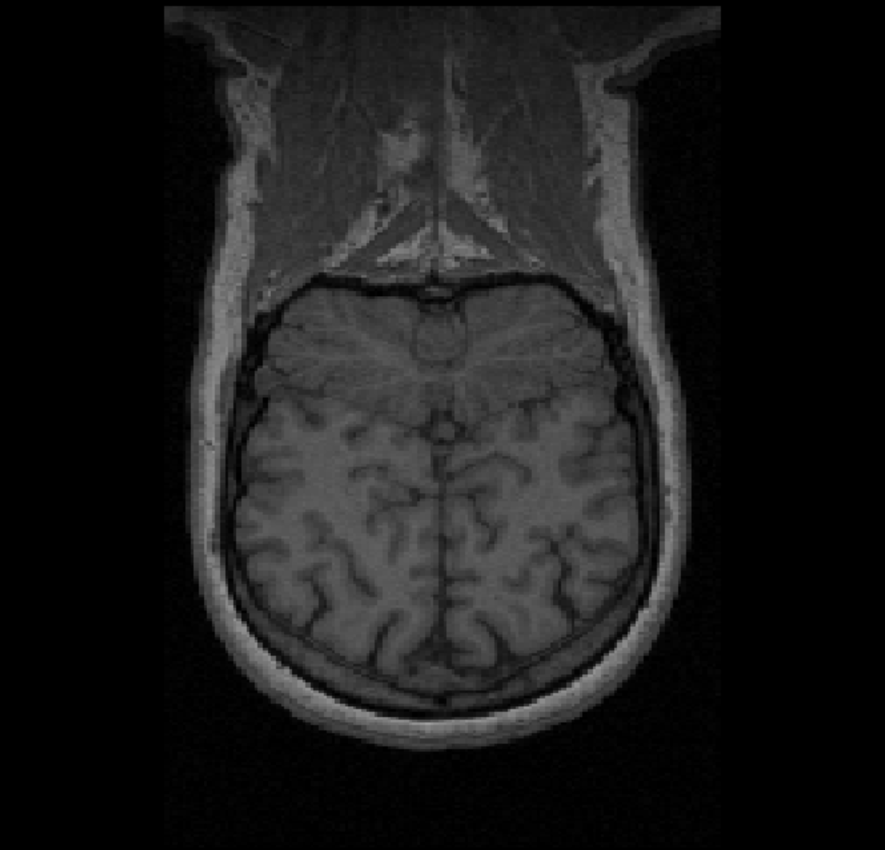
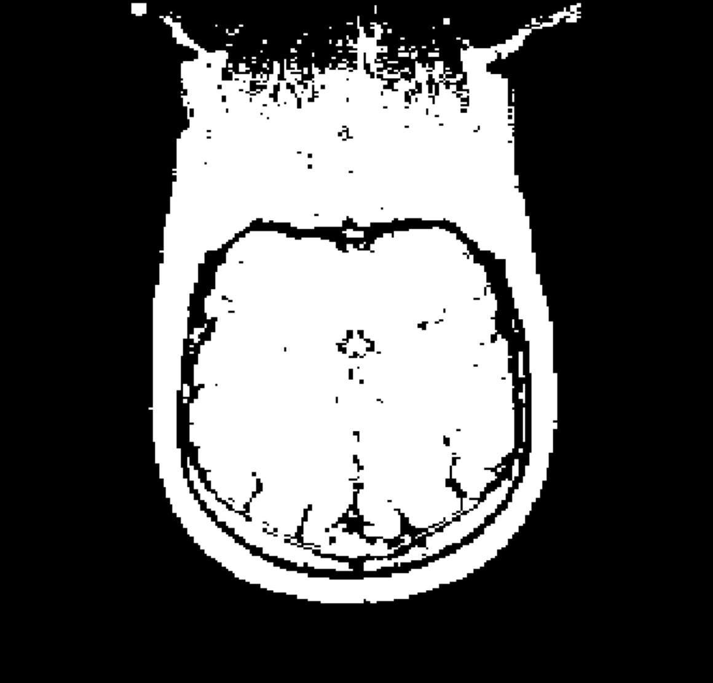
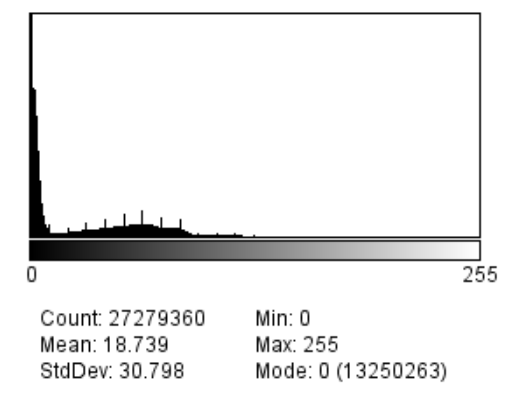
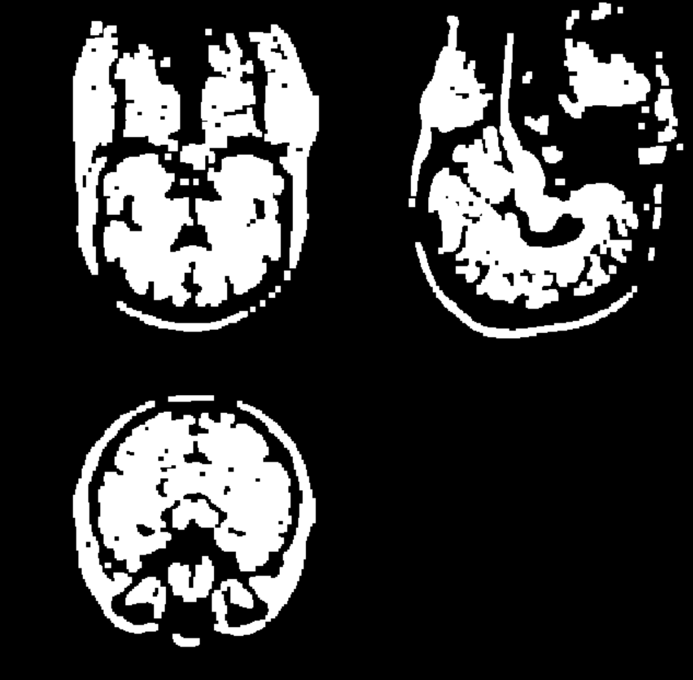

Noé Masse, 27/09/2020
Notre objectif va être d'implémenter un algorithme de segmentation appelé Bridge Burner, proposé par A. Mikheev, H. Rusinek et R. Grossman.
Le principe est le suivant :
Cela est similaire à l'opérateur Opening, qui est définit comme la dilatation d'une érosion. Cet opérateur a la propriété d'enlever les connections (bridges) entres ilôts.
Pour plus d'information sur les opérateurs morphologique, voir :
"Image analysis using mathematical morphology", R. M. Haralick, S. R. Sternberg, and X. Zhuang, IEEE
Vous pouvez aussi jeter un oeil √† un travail similaire r√©alis√© sur des empreintes digitales üîó (Slide 21).
On poss√®de l'acquisition d'un cerveau, et on utilise Fiji üîó afin de l'analyser.
| Original | Binarized (Otsu) |
|---|---|
|  |  |
| Histogramme |
|---|
|  |
Afin de binariser l'image, on utilise la M√©thode d'Otsu üîó.
Celle ci nous deux classes de manière à minimiser les variances.
Pour l'image 3D Coronal, on obtient un seuil de 36.
Cependant, cela ne suffit pas, en effet, si on observe bien, on peut voir des connections entre les différentes parties.

C'est là qu'intervient l'algorithme Bridge Burner.
Une première version est très rapide à implémenter.
On choisi une taille de masque uniforme de 2x2x2, on prend le plus petit possible, car on préférera ici jouer sur le nombre d'opération successives.
CImg<unsigned short> binarizedImg = img.get_threshold(threshold);
for (int i = 0; i < erodeCount; i++)
{
binarizedImg.erode(2);
}
for (int i = 0; i < dilateCount; i++)
{
binarizedImg.dilate(2);
}
Avec les paramètres suivants
| threshold | erodeCount | dilateCount |
|---|---|---|
| 36 | 3 | 2 |
On obtient le résultat suivant:
Pour le seuil de binarisation, on utilisera quasiment systématiquement la méthode d'Otsu.
Le code est adapt√© de mon ancien travail cit√© pr√©c√©demment : binarizer.cpp (gitlab.com) üîó
unsigned short GetOtsuThreshold(const CImg<unsigned short> &img)
{
// Calculate the threshold using the method:
// A threshold selection method from gray-level histograms,
// N. Otsu, 1975, Automatica
double mean = 0.0;
double expect = 0.0; // mu
double cumul = 0.0; // omega
double maxVar = 0.0; // sigma_B
// C6262: Use the heap, too much data for the stack
std::vector<double> hist(USHRT_MAX, 0.0F);
unsigned int voxelCount = img.size();
unsigned short threshold = 0;
// ==== Compute hist ====
cimg_for(img, ptr, unsigned short)
{
hist[*ptr]++;
}
for (int i = 0; i < USHRT_MAX; i++) {
hist[i] /= voxelCount;
mean += i * hist[i];
}
// ==== Threshold ====
for (int i = 0; i < USHRT_MAX; i++) {
cumul += hist[i];
expect += i * hist[i];
if (cumul >= 1.0) break;
double var = std::pow(mean * cumul - expect, 2) / (cumul * (1 - cumul));
if (var >= maxVar) {
threshold = i;
maxVar = var;
}
}
return threshold;
}
On obtient des résultats plutôt bon sur l'image brainseg, un peu moins bon sur l'image Coronal.
| Segmentée | Masque |
|---|---|
|
|
| Segmentée | Masque |
|---|---|
 |
 |
Il serait intéressant de se pencher sur les opérateurs morphologiques généralisés (non binaire), proposé par Haralick, Sternberg et Zhuang. Une idée que j'aurais pour éliminer les bridges, serait de calculer une Distance Transform, et la binariser avec un seuil choisi, et ensuite dilater l'image.
#include <iostream>
#include <cmath>
#include <vector>
#include "CImg.h"
using namespace cimg_library;
unsigned short GetOtsuThreshold(const CImg<unsigned short> &img)
{
// Calculate the threshold using the method:
// A threshold selection method from gray-level histograms,
// N. Otsu, 1975, Automatica
double mean = 0.0;
double expect = 0.0; // mu
double cumul = 0.0; // omega
double maxVar = 0.0; // sigma_B
// C6262: Use the heap, too much data for the stack
std::vector<double> hist(USHRT_MAX, 0.0F);
unsigned int voxelCount = img.size();
unsigned short threshold = 0;
// ==== Compute hist ====
cimg_for(img, ptr, unsigned short)
{
hist[*ptr]++;
}
for (int i = 0; i < USHRT_MAX; i++) {
hist[i] /= voxelCount;
mean += i * hist[i];
}
// ==== Threshold ====
for (int i = 0; i < USHRT_MAX; i++) {
cumul += hist[i];
expect += i * hist[i];
if (cumul >= 1.0) break;
double var = std::pow(mean * cumul - expect, 2) / (cumul * (1 - cumul));
if (var >= maxVar) {
threshold = i;
maxVar = var;
}
}
return threshold;
}
int main(int argc, char** argv)
{
if (argc < 4)
{
std::cerr << "Usage: <erodeCount> <dilateCount>" << std::endl;
return EXIT_FAILURE;
}
// Load Img
CImg<unsigned short> img;
float voxelsize[3];
img.load_analyze(argv[1], voxelsize);
int dim[] = { img.width(), img.height(), img.depth() };
unsigned short threshold = GetOtsuThreshold(img);
unsigned int erodeCount = atoi(argv[2]);
unsigned int dilateCount = atoi(argv[3]);
CImg<unsigned short> binarizedImg = img.get_threshold(threshold);
for (int i = 0; i < erodeCount; i++)
{
binarizedImg.erode(2);
}
for (int i = 0; i < dilateCount; i++)
{
binarizedImg.dilate(2);
}
binarizedImg.display("Binarized");
return EXIT_SUCCESS;
}